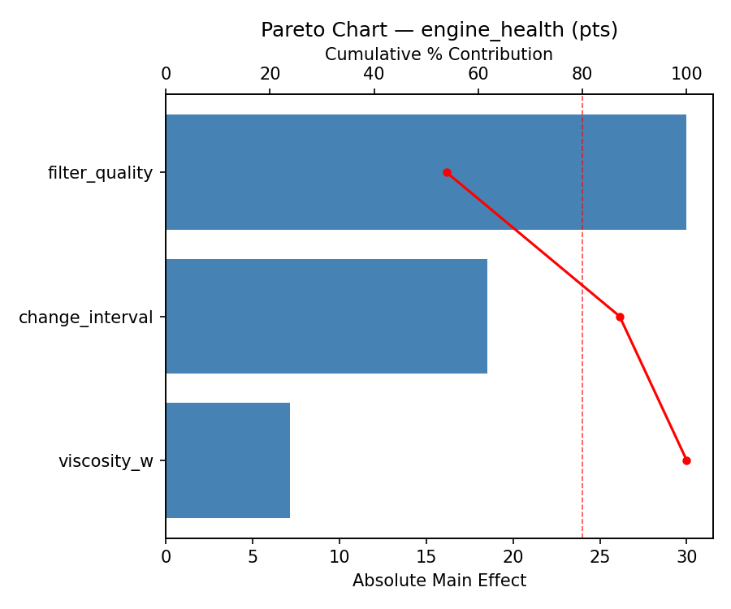
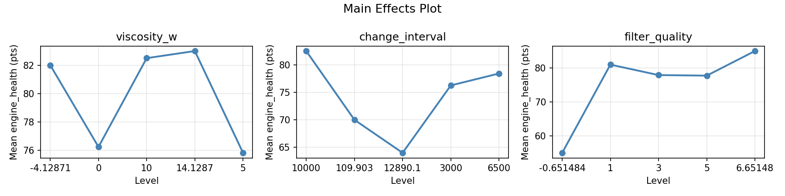
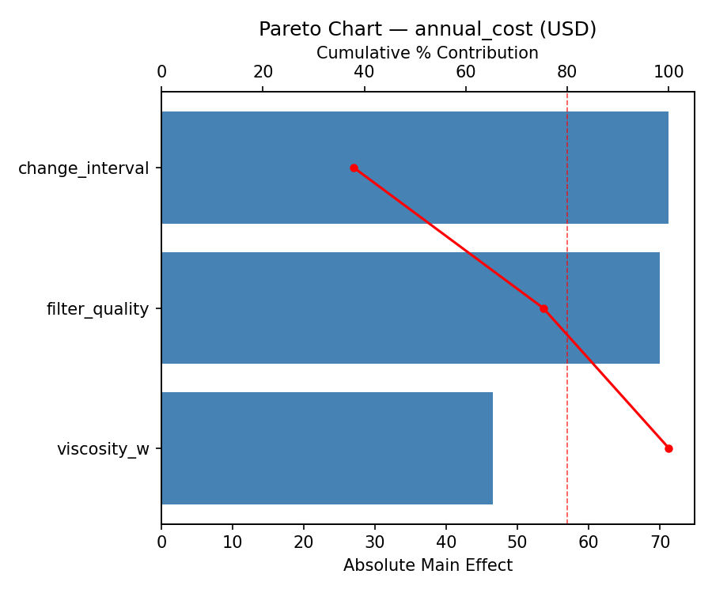
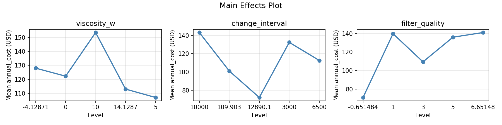
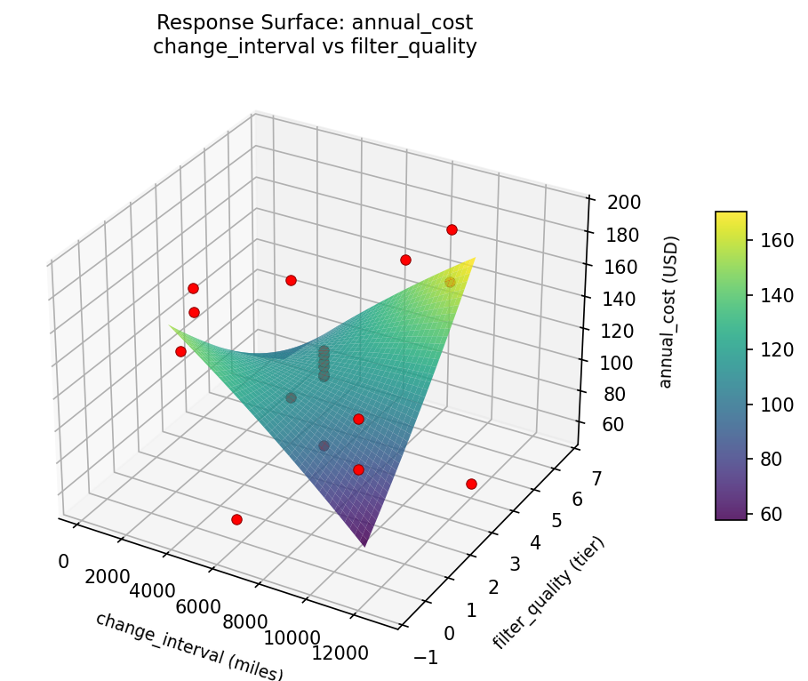
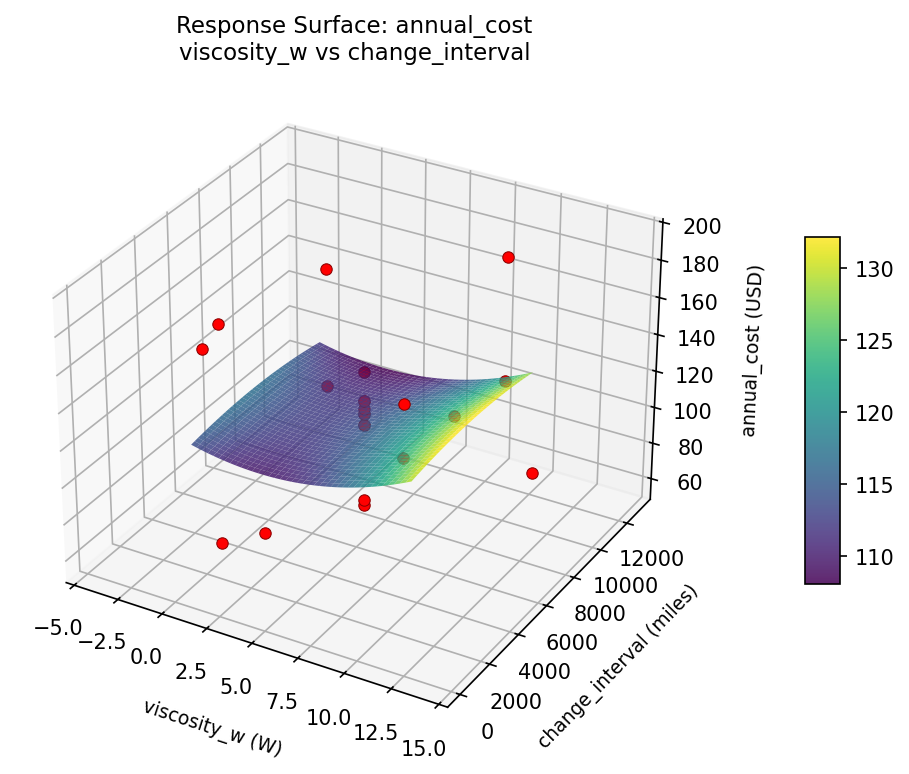
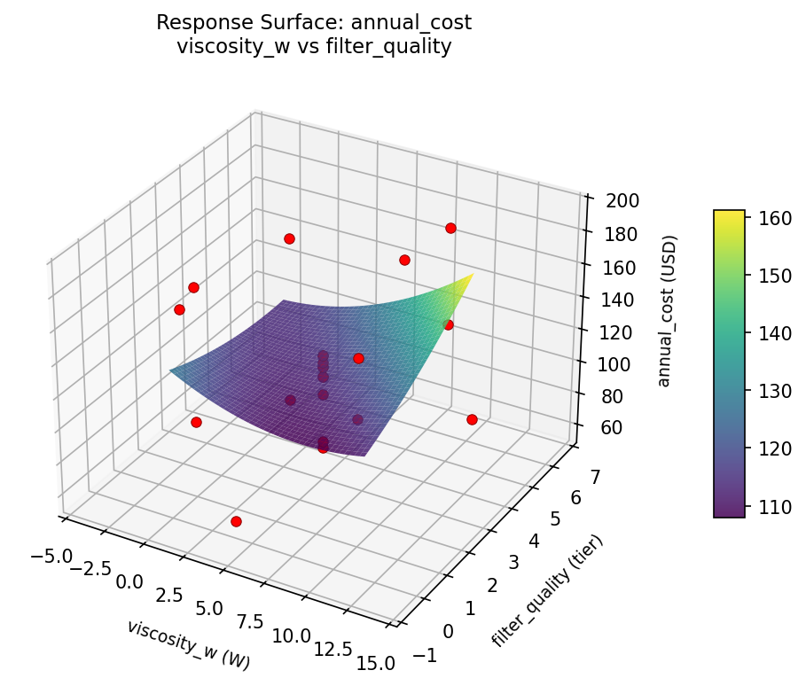
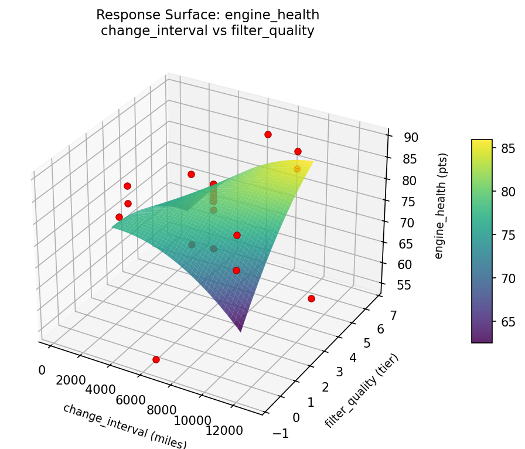
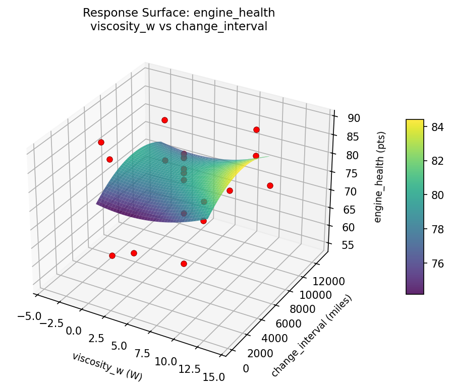
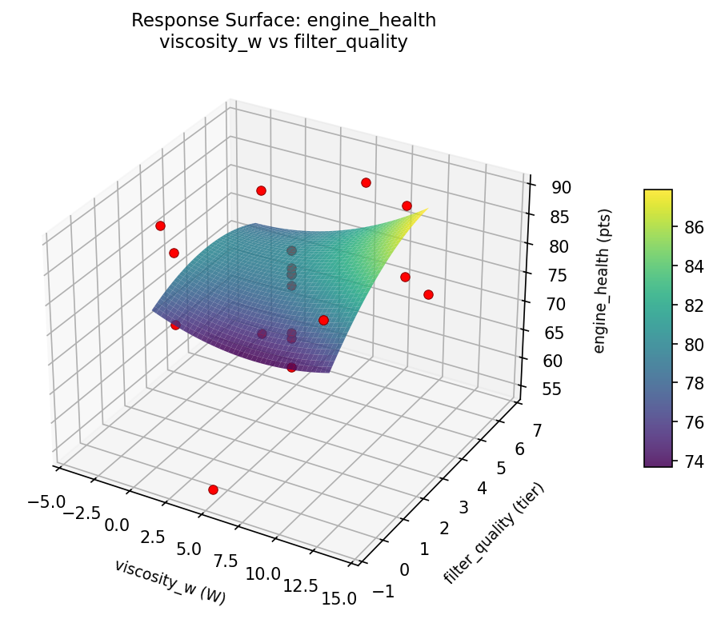

Summary
This experiment investigates engine oil change interval. Central composite design to maximize engine longevity and minimize cost by tuning oil viscosity, change interval, and filter quality.
The design varies 3 factors: viscosity w (W), ranging from 0 to 10, change interval (miles), ranging from 3000 to 10000, and filter quality (tier), ranging from 1 to 5. The goal is to optimize 2 responses: engine health (pts) (maximize) and annual cost (USD) (minimize). Fixed conditions held constant across all runs include engine type = gasoline_4cyl, driving style = mixed.
A Central Composite Design (CCD) was selected to fit a full quadratic response surface model, including curvature and interaction effects. With 3 factors this produces 22 runs including center points and axial (star) points that extend beyond the factorial range.
Quadratic response surface models were fitted to capture potential curvature and factor interactions. The RSM contour plots below visualize how pairs of factors jointly affect each response.
Key Findings
For engine health, the most influential factors were viscosity w (55.1%), change interval (27.6%), filter quality (17.3%). The best observed value was 89.0 (at viscosity w = 5, change interval = 6500, filter quality = 3).
For annual cost, the most influential factors were viscosity w (38.7%), filter quality (38.5%), change interval (22.8%). The best observed value was 58.0 (at viscosity w = -4.12871, change interval = 6500, filter quality = 3).
Recommended Next Steps
- Run confirmation experiments at the predicted optimal settings to validate the model.
- Consider whether any fixed factors should be varied in a future study.
Experimental Setup
Factors
| Factor | Low | High | Unit |
|---|
viscosity_w | 0 | 10 | W |
change_interval | 3000 | 10000 | miles |
filter_quality | 1 | 5 | tier |
Fixed: engine_type = gasoline_4cyl, driving_style = mixed
Responses
| Response | Direction | Unit |
|---|
engine_health | ↑ maximize | pts |
annual_cost | ↓ minimize | USD |
Configuration
{
"metadata": {
"name": "Engine Oil Change Interval",
"description": "Central composite design to maximize engine longevity and minimize cost by tuning oil viscosity, change interval, and filter quality"
},
"factors": [
{
"name": "viscosity_w",
"levels": [
"0",
"10"
],
"type": "continuous",
"unit": "W"
},
{
"name": "change_interval",
"levels": [
"3000",
"10000"
],
"type": "continuous",
"unit": "miles"
},
{
"name": "filter_quality",
"levels": [
"1",
"5"
],
"type": "continuous",
"unit": "tier"
}
],
"fixed_factors": {
"engine_type": "gasoline_4cyl",
"driving_style": "mixed"
},
"responses": [
{
"name": "engine_health",
"optimize": "maximize",
"unit": "pts"
},
{
"name": "annual_cost",
"optimize": "minimize",
"unit": "USD"
}
],
"settings": {
"operation": "central_composite",
"test_script": "use_cases/118_engine_oil_change/sim.sh"
}
}
Experimental Matrix
The Central Composite Design produces 22 runs. Each row is one experiment with specific factor settings.
| Run | viscosity_w | change_interval | filter_quality |
|---|
| 1 | 5 | 6500 | 3 |
| 2 | 10 | 3000 | 5 |
| 3 | 0 | 10000 | 1 |
| 4 | 5 | 12890.1 | 3 |
| 5 | 5 | 6500 | 3 |
| 6 | -4.12871 | 6500 | 3 |
| 7 | 5 | 6500 | -0.651484 |
| 8 | 5 | 6500 | 3 |
| 9 | 10 | 10000 | 1 |
| 10 | 14.1287 | 6500 | 3 |
| 11 | 5 | 6500 | 3 |
| 12 | 5 | 109.903 | 3 |
| 13 | 5 | 6500 | 3 |
| 14 | 0 | 3000 | 5 |
| 15 | 5 | 6500 | 3 |
| 16 | 10 | 3000 | 1 |
| 17 | 5 | 6500 | 6.65148 |
| 18 | 10 | 10000 | 5 |
| 19 | 5 | 6500 | 3 |
| 20 | 0 | 3000 | 1 |
| 21 | 0 | 10000 | 5 |
| 22 | 5 | 6500 | 3 |
Step-by-Step Workflow
1
Preview the design
$ python doe.py info --config use_cases/118_engine_oil_change/config.json
2
Generate the runner script
$ python doe.py generate --config use_cases/118_engine_oil_change/config.json \
--output use_cases/118_engine_oil_change/results/run.sh --seed 42
3
Execute the experiments
$ bash use_cases/118_engine_oil_change/results/run.sh
4
Analyze results
$ python doe.py analyze --config use_cases/118_engine_oil_change/config.json
5
Get optimization recommendations
$ python doe.py optimize --config use_cases/118_engine_oil_change/config.json
6
Multi-objective optimization
With 2 competing responses, use --multi to find the best compromise via Derringer–Suich desirability.
$ python doe.py optimize --config use_cases/118_engine_oil_change/config.json --multi
7
Generate the HTML report
$ python doe.py report --config use_cases/118_engine_oil_change/config.json \
--output use_cases/118_engine_oil_change/results/report.html
Features Exercised
| Feature | Value |
|---|
| Design type | central_composite |
| Factor types | continuous (all 3) |
| Arg style | double-dash |
| Responses | 2 (engine_health ↑, annual_cost ↓) |
| Total runs | 22 |
Analysis Results
Generated from actual experiment runs using the DOE Helper Tool.
Response: engine_health
Top factors: viscosity_w (55.1%), change_interval (27.6%), filter_quality (17.3%).
Pareto Chart

Main Effects Plot

Response: annual_cost
Top factors: viscosity_w (38.7%), filter_quality (38.5%), change_interval (22.8%).
Pareto Chart

Main Effects Plot

Response Surface Plots
3D surfaces fitted with quadratic RSM. Red dots are observed data points.
annual cost change interval vs filter quality

annual cost viscosity w vs change interval

annual cost viscosity w vs filter quality

engine health change interval vs filter quality

engine health viscosity w vs change interval

engine health viscosity w vs filter quality

Multi-Objective Optimization
When responses compete, Derringer–Suich desirability finds the best compromise.
Each response is scaled to a 0–1 desirability, then combined via a weighted geometric mean.
Overall Desirability
D = 0.7345
Per-Response Desirability
| Response | Weight | Desirability | Predicted | Dir |
|---|
engine_health |
2.0 |
|
84.00 0.8209 84.00 pts |
↑ |
annual_cost |
1.0 |
|
112.00 0.5882 112.00 USD |
↓ |
Recommended Settings
| Factor | Value |
|---|
viscosity_w | 0 W |
change_interval | 3000 miles |
filter_quality | 5 tier |
Source: from observed run #15
Trade-off Summary
Sacrifice = how much worse than single-objective best.
| Response | Predicted | Best Observed | Sacrifice |
|---|
annual_cost | 112.00 | 58.00 | +54.00 |
Top 3 Runs by Desirability
| Run | D | Factor Settings |
|---|
| #11 | 0.7157 | viscosity_w=5, change_interval=6500, filter_quality=3 |
| #5 | 0.6958 | viscosity_w=5, change_interval=6500, filter_quality=3 |
Model Quality
| Response | R² | Type |
|---|
annual_cost | 0.5179 | quadratic |
Full Multi-Objective Output
============================================================
MULTI-OBJECTIVE OPTIMIZATION
Method: Derringer-Suich Desirability Function
============================================================
Overall desirability: D = 0.7345
Response Weight Desirability Predicted Direction
---------------------------------------------------------------------
engine_health 2.0 0.8209 84.00 pts ↑
annual_cost 1.0 0.5882 112.00 USD ↓
Recommended settings:
viscosity_w = 0 W
change_interval = 3000 miles
filter_quality = 5 tier
(from observed run #15)
Trade-off summary:
engine_health: 84.00 (best observed: 89.00, sacrifice: +5.00)
annual_cost: 112.00 (best observed: 58.00, sacrifice: +54.00)
Model quality:
engine_health: R² = 0.2228 (linear)
annual_cost: R² = 0.5179 (quadratic)
Top 3 observed runs by overall desirability:
1. Run #15 (D=0.7345): viscosity_w=0, change_interval=3000, filter_quality=5
2. Run #11 (D=0.7157): viscosity_w=5, change_interval=6500, filter_quality=3
3. Run #5 (D=0.6958): viscosity_w=5, change_interval=6500, filter_quality=3
Full Analysis Output
=== Main Effects: engine_health ===
Factor Effect Std Error % Contribution
--------------------------------------------------------------
viscosity_w 27.0000 1.8946 55.1%
change_interval 13.5000 1.8946 27.6%
filter_quality 8.5000 1.8946 17.3%
=== ANOVA Table: engine_health ===
Source DF SS MS F p-value
-----------------------------------------------------------------------------
viscosity_w 4 586.9470 146.7367 2.525 0.1144
change_interval 4 247.9470 61.9867 1.066 0.4270
filter_quality 4 155.6970 38.9242 0.670 0.6292
Lack of Fit 2 260.8977 130.4489 2.244 0.1766
Pure Error 7 406.8750 58.1250
Error 9 667.7727 58.1250
Total 21 1658.3636 78.9697
=== Summary Statistics: engine_health ===
viscosity_w:
Level N Mean Std Min Max
------------------------------------------------------------
-4.12871 1 82.0000 0.0000 82.0000 82.0000
0 4 79.2500 13.1498 60.0000 89.0000
10 4 81.0000 2.9439 78.0000 85.0000
14.1287 1 55.0000 0.0000 55.0000 55.0000
5 12 77.6667 6.9194 64.0000 85.0000
change_interval:
Level N Mean Std Min Max
------------------------------------------------------------
10000 4 76.7500 12.1484 60.0000 89.0000
109.903 1 70.0000 0.0000 70.0000 70.0000
12890.1 1 83.0000 0.0000 83.0000 83.0000
3000 4 83.5000 2.3805 81.0000 86.0000
6500 12 76.3333 9.2965 55.0000 85.0000
filter_quality:
Level N Mean Std Min Max
------------------------------------------------------------
-0.651484 1 82.0000 0.0000 82.0000 82.0000
1 4 82.5000 4.6547 78.0000 89.0000
3 12 76.0833 9.5199 55.0000 85.0000
5 4 77.7500 12.1209 60.0000 86.0000
6.65148 1 74.0000 0.0000 74.0000 74.0000
=== Main Effects: annual_cost ===
Factor Effect Std Error % Contribution
--------------------------------------------------------------
viscosity_w 67.5000 7.3398 38.7%
filter_quality 67.0000 7.3398 38.5%
change_interval 39.7500 7.3398 22.8%
=== ANOVA Table: annual_cost ===
Source DF SS MS F p-value
-----------------------------------------------------------------------------
viscosity_w 4 4272.5379 1068.1345 1.139 0.3978
change_interval 4 2728.2879 682.0720 0.727 0.5953
filter_quality 4 5449.0379 1362.2595 1.452 0.2941
Lack of Fit 2 5873.5909 2936.7955 3.131 0.1068
Pure Error 7 6566.0000 938.0000
Error 9 12439.5909 938.0000
Total 21 24889.4545 1185.2121
=== Summary Statistics: annual_cost ===
viscosity_w:
Level N Mean Std Min Max
------------------------------------------------------------
-4.12871 1 126.0000 0.0000 126.0000 126.0000
0 4 138.5000 60.1637 58.0000 192.0000
10 4 125.5000 10.8474 118.0000 141.0000
14.1287 1 71.0000 0.0000 71.0000 71.0000
5 12 114.5833 29.2403 68.0000 162.0000
change_interval:
Level N Mean Std Min Max
------------------------------------------------------------
10000 4 123.2500 54.8171 58.0000 192.0000
109.903 1 101.0000 0.0000 101.0000 101.0000
12890.1 1 113.0000 0.0000 113.0000 113.0000
3000 4 140.7500 25.3163 118.0000 176.0000
6500 12 113.1667 31.9427 68.0000 162.0000
filter_quality:
Level N Mean Std Min Max
------------------------------------------------------------
-0.651484 1 162.0000 0.0000 162.0000 162.0000
1 4 140.7500 34.4226 118.0000 192.0000
3 12 109.5833 27.8027 68.0000 160.0000
5 4 123.2500 49.6076 58.0000 176.0000
6.65148 1 95.0000 0.0000 95.0000 95.0000
Optimization Recommendations
=== Optimization: engine_health ===
Direction: maximize
Best observed run: #2
viscosity_w = 5
change_interval = 6500
filter_quality = 3
Value: 89.0
RSM Model (linear, R² = 0.2299, Adj R² = 0.1015):
Coefficients:
intercept +77.7273
viscosity_w +3.7376
change_interval +3.0088
filter_quality +1.7226
RSM Model (quadratic, R² = 0.5252, Adj R² = 0.1692):
Coefficients:
intercept +81.0299
viscosity_w +3.7376
change_interval +3.0088
filter_quality +1.7226
viscosity_w*change_interval -0.8750
viscosity_w*filter_quality -1.6250
change_interval*filter_quality -5.1250
viscosity_w^2 -3.0513
change_interval^2 +0.0987
filter_quality^2 -2.0013
Curvature analysis:
viscosity_w coef=-3.0513 concave (has a maximum)
filter_quality coef=-2.0013 concave (has a maximum)
change_interval coef=+0.0987 negligible curvature
Notable interactions:
change_interval*filter_quality coef=-5.1250 (antagonistic)
viscosity_w*filter_quality coef=-1.6250 (antagonistic)
viscosity_w*change_interval coef=-0.8750 (antagonistic)
Predicted optimum (from quadratic model, at observed points):
viscosity_w = 10
change_interval = 10000
filter_quality = 1
Predicted value: 86.9747
Surface optimum (via L-BFGS-B, quadratic model):
viscosity_w = 8.67675
change_interval = 10000
filter_quality = 1
Predicted value: 87.1884
Model quality: Moderate fit — use predictions directionally, not precisely.
Factor importance:
1. viscosity_w (effect: 24.0, contribution: 46.8%)
2. change_interval (effect: 14.2, contribution: 27.8%)
3. filter_quality (effect: 13.0, contribution: 25.4%)
=== Optimization: annual_cost ===
Direction: minimize
Best observed run: #3
viscosity_w = -4.12871
change_interval = 6500
filter_quality = 3
Value: 58.0
RSM Model (linear, R² = 0.0834, Adj R² = -0.0694):
Coefficients:
intercept +119.4545
viscosity_w +7.0449
change_interval +8.2851
filter_quality -4.8150
RSM Model (quadratic, R² = 0.3341, Adj R² = -0.1653):
Coefficients:
intercept +134.0203
viscosity_w +7.0449
change_interval +8.2851
filter_quality -4.8150
viscosity_w*change_interval -3.1250
viscosity_w*filter_quality +2.8750
change_interval*filter_quality -15.1250
viscosity_w^2 -13.5829
change_interval^2 -1.7329
filter_quality^2 -6.5329
Curvature analysis:
viscosity_w coef=-13.5829 concave (has a maximum)
filter_quality coef=-6.5329 concave (has a maximum)
change_interval coef=-1.7329 concave (has a maximum)
Notable interactions:
change_interval*filter_quality coef=-15.1250 (antagonistic)
viscosity_w*change_interval coef=-3.1250 (antagonistic)
viscosity_w*filter_quality coef=+2.8750 (synergistic)
Predicted optimum (from linear model, at observed points):
viscosity_w = 10
change_interval = 10000
filter_quality = 1
Predicted value: 139.5995
Surface optimum (via L-BFGS-B, linear model):
viscosity_w = 0
change_interval = 3000
filter_quality = 5
Predicted value: 99.3096
Model quality: Weak fit — consider adding center points or using a different design.
Factor importance:
1. filter_quality (effect: 94.0, contribution: 45.1%)
2. viscosity_w (effect: 72.5, contribution: 34.8%)
3. change_interval (effect: 41.8, contribution: 20.0%)